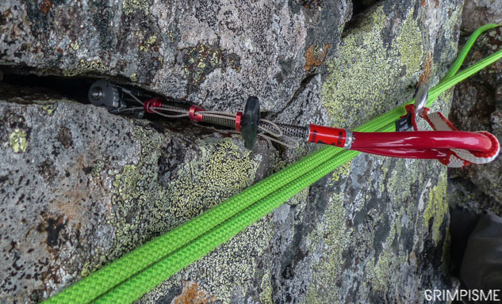
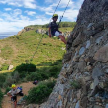

Hights
Hights
Climbing "difficulty" is the most common discipline, it consists of climbing a wall, a cliff.
Climb "old-fashioned" need to use Chock that are put in jammings, cracks to have anchor points.

 Today more and more cliffs are equipped with rivet or "split" directly installed in the rock which is much safer and solid.
Today more and more cliffs are equipped with rivet or "split" directly installed in the rock which is much safer and solid.
There are several climbing methods.
The most widespread and simplest: Climbing "second" or "top rope" consists of having the belay rope hung on top of the wall.

 Then we have the climb "lead" where the rope is not hung on top of the wall, it is up to the climber to hang it at regular intervals on splits or jammers to be safe.
The last, which is also the most dangerous, the "free solo" which consists of climbing the cliffs/walls without any safety equipment and in autonomy
Then we have the climb "lead" where the rope is not hung on top of the wall, it is up to the climber to hang it at regular intervals on splits or jammers to be safe.
The last, which is also the most dangerous, the "free solo" which consists of climbing the cliffs/walls without any safety equipment and in autonomy